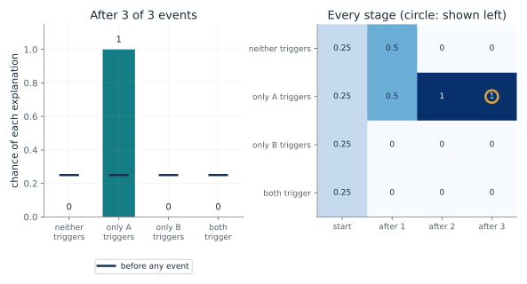
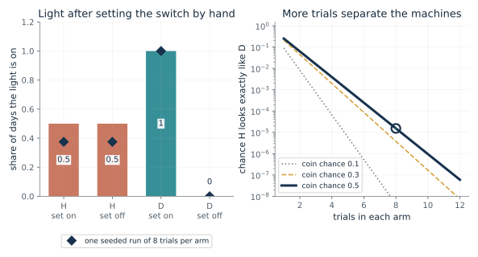
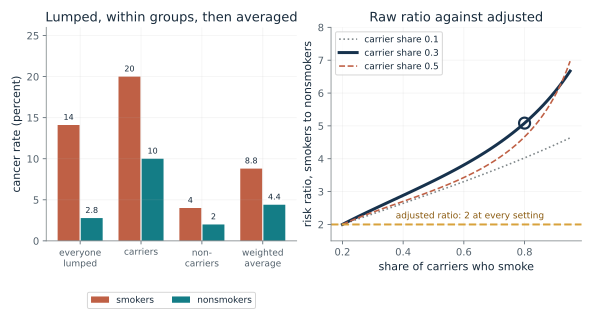
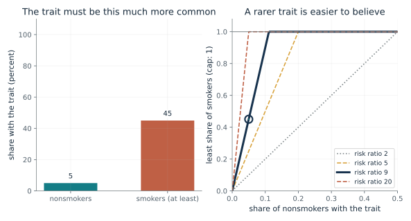
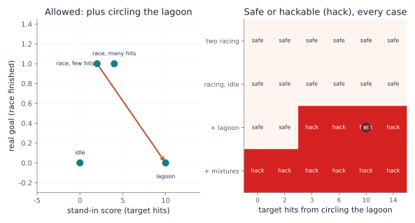
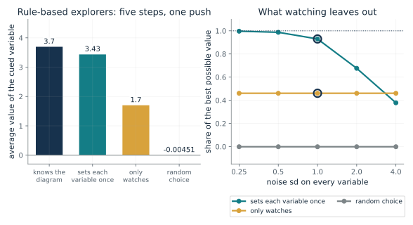

Before using a record to say what a change would do, ask what else could have set both the cause and the effect, whether the cause was assigned by chance or by something that also touches the outcome, and which variable you would actually set. Work the weighted average by hand when a grouping variable is recorded, and treat a stand-in score as a bet that needs the allowed behaviors named.
“Two logs of a switch and a light look identical. Does that mean setting the switch will do the same in both?”
Use mmi-ch16-discovering-causes with the companion's AI skill package. The illustrations below also work on their own.
Which explanations survive three watched events?
From Chapter 16, Three events, four explanations, one block
Block B alone does nothing, block A alone lights the machine, and A with B keeps it lit. Which of four possible explanations are left, and which block should a child take off?
Each explanation says which blocks trigger the machine. B alone did nothing, which strikes out every explanation where B triggers. A alone lit it, which strikes out 'neither' and any explanation where A fails to trigger. What remains has A as the only trigger. The third event adds nothing, because A already explains the light. The starting chance p changes the in-between chances, not the final answer.
Predict first: After only the first event (B alone: nothing), predict whether the toy already points to taking A off or whether it still needs the second event.

Events watched (0 to 3): 3 · Starting chance a block triggers it (companion's choice): 0.5
What happens: After all three events only one explanation survives, 'only A triggers', so taking A off is the action the toy advises. In the study 18 of 24 children took A off first. Slide back to see that two events already leave one explanation, and the third rules out nothing more.
After the events (B alone: nothing; A alone: lit; A and B: lit), 1 of 4 explanations remain. The chance that taking A off stops the machine is 1 and for B it is 0.
- Explanations still possible
- 1
- Chance neither block triggers it
- 0
- Chance removing A stops it
- 1
- Chance removing B stops it
- 0
A system that keeps a list of rival explanations and strikes out the ones the data contradict does a simple form of Bayesian updating, as long as someone supplies the list and the starting chances.
Eighteen of 24 children took block A off first. The authors say their experiments do not test which account of causal learning explains this, so the tally is not a model of the children.
A program can hold the four explanations and their starting chances and strike out the ones the events contradict. Its starting assumption about the device is supplied by its builder.
Show the calculation
Start: weights (1-p)^2, p(1-p), (1-p)p, p^2 with p = 0.5 (the companion's choice of starting chance; the book assigns none): 0.25, 0.25, 0.25, 0.25. Cross out each explanation that clashes with an event, then divide by what is left: 0, 1, 0, 0.
The equations and symbols
- h
- one of four explanations: neither block triggers, only A, only B, or both
- e_1 ... e_k
- the events watched so far (B alone: nothing; A alone: lit; A and B: lit)
- P(h)
- the starting chance of an explanation; here each block triggers with chance p, independently
- [h fits e]
- 1 if the explanation allows what was seen, 0 if it is crossed out
Each block either triggers the machine on its own or has no effect, either triggering block suffices, and the machine behaves without noise. The tally describes a machine that keeps such a list; the chapter says it does not describe the children, and the authors did not measure a prior distribution.
Check your understanding: With p = 0.5, what is the chance that A is a trigger after only the first event?
Book source: Chapter 16, Three events, four explanations, one block. Illustration C16-D01. Constructed example. The chapter's toy tally of four explanations under independent-trigger assumptions, with the events of Gopnik and colleagues (2001). The chapter crosses out explanations without assigning starting chances; the independent trigger chance p is this companion's way of showing the chance version of the same tally. The children's counts (18 of 24 took A off first, 3 took B, 3 took both) are reported in the chapter and are not computed here.
Why can identical logs hide different effects of setting a switch?
From Chapter 16, Seeing is not setting
Two machines keep the same log of a switch and a light. If you set the switch by hand, does the light follow in both?
In both machines the light and the switch are on together or off together, so the logs match. In H a hidden coin decides both, so setting the switch leaves the light to the coin. In D the switch drives the light, so the light follows the setting. Setting the switch on and off at random trials makes the two machines predict different light rates, and more trials make a lucky match less and less likely.
Predict first: In both logs the light was on every time the switch was on. Predict how often the light comes on in each machine when someone sets the switch on by hand.

Trials in each arm: 8 · Chance the hidden coin is on (0.5 is the chapter's): 0.5
What happens: Set on by hand, the light is on half the time in H and every time in D, though the logs were identical. With 8 trials in each arm, H shows D's exact pattern by luck with chance about 0.000015 (1.5 in 100,000). A few trials already tell the machines apart.
In both logs the light was on whenever the switch was. Set by hand, the light comes on 0.5 of the time in H and always in D. With 8 trials per arm, H shows D's exact pattern by luck with chance 1.53e-5.
- Logged chance of light when switch on (both)
- 1
- Light after set on, H
- 0.5
- Light after set on, D
- 1
- Chance H mimics D in the experiment
- 1.53e-5
A machine that learns only from logs can mistake a switch that merely accompanies the light for one that makes it. Setting the variable on randomly chosen trials separates the two.
Gopnik and colleagues' machine had a hidden switch worked by an assistant the children never saw. The paper has no data on hidden causes of this kind.
A program can list the rival predictions and count outcomes. A person must decide whether the setting is safe and whether it really isolates the switch.
Show the calculation
H: the hidden coin lights the light with chance 0.5 whatever the setting. D: the light follows the setting. Mimic chance = (c x (1 - c))^n = (0.5 x 0.5)^8 = 1.53e-5.
The equations and symbols
- y
- the outcome, here the light
- x
- the variable, here the switch
- do(x)
- x was set from outside, not merely seen
- p(y | x)
- the chance of y among recorded cases where x had that value
In H a hidden coin sets the switch and the light together and the switch does nothing; in D the coin sets only the switch and the switch sets the light. The experiment assumes setting the switch changes the switch without separately changing the light. The chapter's coin is fair; other chances are this companion's variation.
Check your understanding: With a fair coin and 3 trials in each arm, what is the chance that H shows D's exact pattern (all lit when set on, all dark when set off)?
Book source: Chapter 16, Seeing is not setting. Illustration C16-D02. Constructed example. The chapter's constructed pair of machines, H and D, with a fair hidden coin (the coin chance is varied here). The chapter says explicitly that the pair is made up and not data. The seeded trials are simulated with a fixed seed; the 'mimic chance' is exact arithmetic for the experiment of equal numbers of set-on and set-off trials.
How much of a risk ratio is the gene?
From Chapter 16, Fisher, Cornfield, and the hidden trait behind smoking
Smokers look five times as likely to get cancer when everyone is lumped, but a gene feeds both smoking and cancer. What does adjusting by the gene give?
Smokers are mostly carriers in this example, and carriers have more cancer whether or not they smoke. The raw comparison therefore credits smoking with the gene's effect. The back-door formula compares smokers with nonsmokers inside each group, where the gene cannot differ, and then weights the groups by their share of the population, 0.3 and 0.7 here.
Predict first: If carriers and noncarriers smoked at the same rate (0.2), predict how the raw ratio would compare with the adjusted ratio.

Share of carriers who smoke: 0.8 · Share of people who carry the gene: 0.3
What happens: Lumped together, smokers have 14.1 percent and nonsmokers 2.77 percent, a ratio of 5.08. Averaged by group with the same weights, smokers have 8.8 percent and nonsmokers 4.4, a ratio of 2. The gene was feeding the raw gap.
When 80 percent of carriers and 20 percent of noncarriers smoke, lumping everyone gives smokers 14.1 percent against 2.77 percent, a ratio of 5.08. Comparing inside each gene group and weighting by group size gives 8.8 percent against 4.4 percent, a ratio of 2.
- Raw risk ratio
- 5.08
- Adjusted risk ratio
- 2
- Adjusted rate, smokers (percent)
- 8.8
- Adjusted rate, nonsmokers (percent)
- 4.4
A recorded confounder lets an analyst estimate what setting the exposure would do. The result is only as good as the causal diagram that says the grouping blocks every hidden route.
Fisher argued in 1957 that a common genetic cause had not been excluded; Cornfield's group answered with a bound and with many lines of evidence. This is a dispute about evidence, not a model of a brain.
A program can compute the weighted average once the grouping variable is recorded and the diagram is stated. It cannot supply the diagram.
Show the calculation
Adjusted smokers = 0.3 x 20 + 0.7 x 4 = 8.8 percent. Adjusted nonsmokers = 0.3 x 10 + 0.7 x 2 = 4.4 percent. Raw smokers weight carriers by 0.3 x 0.8 against 0.7 x 0.2.
The equations and symbols
- X
- the exposure, smoking
- Y
- the outcome, cancer
- Z
- the recorded grouping variable, carrying the gene or not
- P(Z=z)
- the share of the whole population in group z (0.3 carriers, 0.7 noncarriers)
The gene is recorded, blocks every back-door path, and is not an effect of smoking; smokers and nonsmokers appear in each group. The drawing of the causal diagram is the analyst's assumption, and the formula is only as good as the diagram.
Check your understanding: Carriers are 0.3 of the population. Among carriers 20 percent of smokers and 10 percent of nonsmokers get cancer; among noncarriers 4 and 2 percent. What are the adjusted rates?
Book source: Chapter 16, Fisher, Cornfield, and the hidden trait behind smoking. Illustration C16-D03. Formula. Book formula (Pearl 1995) with the chapter's made-up numbers: 3 in 10 carry the gene; among carriers 20 percent of smokers and 10 percent of nonsmokers get cancer; among noncarriers 4 and 2 percent; 8 in 10 carriers and 2 in 10 noncarriers smoke. The other carrier shares and smoking shares are this companion's variations. None of it is data.
How common must a hidden trait be to explain away a risk ratio?
From Chapter 16, Fisher, Cornfield, and the hidden trait behind smoking
Suppose smoking did nothing and one yes-or-no trait caused the whole association. How common would it have to be among smokers?
If the trait explained everything, the extra risk smokers carry would have to come from smokers having the trait more often. A ninefold risk needs at least a ninefold difference in how often the trait appears. A share cannot exceed 100 percent, so a trait present in more than 1 in 9 nonsmokers cannot reach nine times that among smokers.
Predict first: At a risk ratio of 9, predict how common the trait must be among smokers if it appears in 1 nonsmoker in 20, and whether it could exist if it appeared in 1 in 5.

Observed risk ratio: 9 · Share of nonsmokers with the trait: 0.05
What happens: At ratio 9 and 5 percent of nonsmokers, at least 45 percent of smokers (9 in 20) would need the trait. Move the nonsmoker share to 20 percent and the answer passes 100 percent, so no such trait can exist.
A risk ratio of 9 means a trait standing in for smoking must be at least 9 times as common among smokers. With 5 percent of nonsmokers having it, at least 45 percent of smokers would have to.
- Observed risk ratio
- 9
- Nonsmokers with the trait
- 5 percent
- Smokers who would need it
- 45 percent
A hidden-trait objection is a quantitative claim. It can be checked against the size of the association, even when nobody measured the trait.
This is an argument from a published epidemiological dispute, not a statement about any brain or mind.
A system asked to explain an association by an unmeasured trait can compute the floor and report when it is impossible.
Show the calculation
Least prevalence among smokers = risk ratio x prevalence among nonsmokers = 9 x 0.05 = 0.45.
The equations and symbols
- risk ratio
- how many times likelier the outcome is in smokers than in nonsmokers (9 in the studies the chapter reviews)
- share of nonsmokers
- the share of nonsmokers who have the hypothetical trait
- share of smokers
- the least share of smokers who would need it
A single yes-or-no trait, and the whole association assumed to come from it. The chapter says the authors argued from many lines of evidence and not from the bound alone, and that no such trait 'has yet been produced despite diligent search'.
Check your understanding: At a risk ratio of 5 and a trait in 10 percent of nonsmokers, what is the least share among smokers?
Book source: Chapter 16, Fisher, Cornfield, and the hidden trait behind smoking. Illustration C16-D04. Formula. The chapter quotes Cornfield and colleagues (1959): a trait that explained the ninefold risk would be 'at least ninefold more prevalent among cigarette smokers than among nonsmokers', and gives the round illustration of 1 in 20 and 9 in 20. The other risk ratios and prevalences are this companion's variations of the same rule.
When is it safe to push a stand-in score?
From Chapter 16, When pushing a stand-in score backfires
A boat-racing game scores target hits, but the goal is to finish. Which sets of allowed behaviors let pushing the score hurt the goal?
The real goal is finishing and the stand-in is target hits. Among the racing behaviors, more hits never means finishing less, so pushing hits is safe. Add a behavior that never finishes but collects many hits and you can raise the stand-in score by giving up the race. Allow mixtures and the scores must agree on every mixture (or one of them must never tell behaviors apart), which these two cannot do.
Predict first: With only the two racing behaviors allowed, predict whether pushing the hit count can ever hurt the race. Then predict what circling the lagoon needs to be worth to change that.

Behaviors allowed (1 to 4): 3 · Target hits from circling the lagoon: 10
What happens: With the lagoon allowed and worth 10 hits, circling beats both racing behaviors on the stand-in score while never finishing the race, so the stand-in is hackable. With only racing behaviors it was safe; with the lagoon worth 2 hits or fewer it stays safe until mixtures are allowed.
With the allowed set (plus circling the lagoon), moving from race, few hits (2 hits) to lagoon (10 hits) raises the stand-in score while the race goes from finished to unfinished. The stand-in is hackable in this made-up set.
- Pushing the stand-in score
- can lower the real goal
- Pair that shows it
- race, few hits to lagoon
- Behaviors allowed
- 4
A score that moved with the goal in the cases anyone watched can part ways with it as soon as an optimizer finds a case nobody watched. Naming the allowed behaviors is part of checking a stand-in.
The chapter brings in Goodhart and Strathern as arguments about audit and economic data, not measurements, and not about brains.
The OpenAI post reports the agent's lagoon behavior and an average score 20 percent above human players, with no algorithm and no raw scores. Skalse and colleagues prove results for simple, finite settings only.
Show the calculation
Real goal = races finished; stand-in = target hits. Behaviors (real, stand-in): race, few hits (1, 2); race, many hits (1, 4); idle (0, 0); lagoon (0, 10). Hackable if some pair has a higher stand-in score and a lower real score.
The equations and symbols
- J_real
- the real goal's score for a behavior (here 1 if the race is finished, 0 if not)
- J_stand-in
- the stand-in score for a behavior (here target hits)
- pi, pi'
- two behaviors the agent is allowed to use
A short list of behaviors with fixed real and stand-in scores, checked against the chapter's definition by comparing pairs. At the last setting mixtures are allowed, and a mixture's score is the average of its parts. This is not the finite-policy theorem, whose conditions the chapter states without proof, and it makes no claim about any deployed system.
Check your understanding: The lagoon is worth 2 hits and only the finite list of four behaviors is allowed. Is pushing the stand-in score safe?
Book source: Chapter 16, When pushing a stand-in score backfires. Illustration C16-D05. Constructed example. The CoastRunners account (Amodei and Clark, 2016: the game scores target hits, the agent circled a lagoon, 'on average 20 percent higher than that achieved by human players') and the definition and result of Skalse and colleagues (2022) as the chapter states them. The behaviors and their scores (finish with 2 or 4 hits, idle, circle with a chosen number of hits) are made up by this companion; the post gives no raw scores.
How much does being allowed to set variables help an agent?
From Chapter 16, Agents that copy an expert who experimented
An agent has five steps to explore a five-variable world, then is told which variable to push as high as possible. Does setting variables beat only watching?
Setting a variable breaks any hidden reason it would otherwise move with the cue, so the cue's response to the setting is a direct reading of that variable's effect. Watching mixes direct effects with shared causes and with chance, and five episodes are few. Noise blurs the setter's single reading of the cue, so its advantage shrinks as the noise approaches the push. Scaling every variable's noise together leaves the watcher's correlations unchanged, so its share stays flat.
Predict first: The setter pushes each variable by 4 and the noise sd starts at 1. Predict whether the setter still beats the watcher when the noise sd rises to 4, the size of the push.

Noise sd on every variable: 1.0 · Chance of an edge between two variables: 0.6
What happens: At noise sd 1 and edge chance 0.6 the setter reaches about 0.93 of the best value, the watcher about 0.46 and a random choice about 0 (best value about 3.7, a sample average). Turn the noise up to 4, the size of the push, and the setter falls to about 0.38, below the watcher, whose share does not change with noise. At edge chance 0.9 the two end up about level instead.
In 100,000 random five-variable diagrams (noise sd 1, edge chance 0.6), a rule-based explorer that sets each variable once reaches 0.93 of the best value, one that only watches 0.46, and a random pick -0.00122. The setter is ahead here. This is the companion's constructed world, not the paper's networks.
- Sets each variable once
- 0.93
- Only watches
- 0.46
- Random choice
- -0.00122
- Best possible (sampled average value)
- 3.7
The chapter reports that agents trained on an expert's records learned to experiment, and that this worked when the agent could act at test time and much less well when it could only watch. This computation illustrates why watching reads cause less directly, and that setting needs a push that stands out from the noise.
No brain recording is involved. The only link to the children is that taking a block off is an intervention a child can attempt and a log cannot.
In the paper, imitation-trained networks reached close to the best reward on a held-out causal link only when they could intervene at test time. The explorers here are rule-based stand-ins, not those networks.
Show the calculation
Expected value of setting variable v to +4 or -4 is 4 x (path sum from v to the cue). The best possible is the larger of those over v. Seeded sample averages over 100,000 diagrams (sampling error remains in the last digit) give oracle 3.7, setters 3.43, watchers 1.7, random -0.00451.
The equations and symbols
- X_t
- the cued variable
- a
- the value an agent sets for variable v (plus or minus 4)
- W
- edge weights of the world's diagram (entry i, j is the weight of an edge from i to j)
- P_{vt}
- the sum over all paths from v to t of the product of edge weights; the effect of setting v by one unit on t
Random linear diagrams with no loops, edge weights of size 0.5 to 1.5 and either sign, equal noise on every variable, and a cued variable that cannot itself be set. The setter pushes each variable once; the watcher takes five unforced episodes and follows the strongest correlation with the cue. A simulation is a computation with disclosed seeds, never a measurement of an agent.
Check your understanding: In a world with one edge, from A to B with weight 1.5, what value of B is expected after setting A to +4, and after setting A to -4?
Book source: Chapter 16, Agents that copy an expert who experimented. Illustration C16-D06. Simulation. A constructed, seeded simulation (seed 1616, 100,000 random diagrams per setting, sample averages) in the spirit of the setup the chapter describes from Lampinen and colleagues (2023): five variables, five exploratory steps, settings of plus or minus 4, a cue naming the variable to push. The edge weights, noise and the rule-based explorers are this companion's; the paper's agents were trained networks and the chapter gives no percent of optimal for them.
Mathematical illustrations use the book's formulas with disclosed small examples. Each interactive choice shows a result computed from the same calculations as the chapter notebook. A simulation is not a measurement, and for a brain the mathematics is a model: a picture illustrates a result, and the assumptions determine its scope. Review copy, brain-computer partnership revision of 1 november 2026.